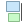
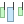

重要
翻訳は あなたが参加できる コミュニティの取り組みです。このページは現在 89.81% 翻訳されています。
22.2.1. レイアウトアイテムの共通オプション
QGISでは、地図をレイアウトするための多数のアイテムセットを提供しています。これには、地図、凡例、スケールバー、画像、テーブル、方位記号、画像などのタイプがあります。ただし、これらのアイテムは以下に示すようにいくつかの共通なオプションと動作があります。
22.2.1.1. レイアウトアイテムの作成
レイアウトアイテムは、さまざまなツールを使用して、最初からあるいは既存のアイテムを基に作成することができます。
レイアウトアイテムを最初から作成するには、
メニューや ツールボックス バーから対応するツールを選択します。
続いて、
注釈
ノードや矢印アイテムは特定の形状を持つため、これらはワンクリックまたはクリック＆ドラッグの方法では描画できません。クリックしてアイテムの各ノードを配置する必要があります。詳細については、 ノードに基づく図形アイテム を参照してください。
また、
ツールボックス ツールバーの
 アイテムを選択/移動 ボタンを使って、既存のアイテムを選択します。
アイテムを選択/移動 ボタンを使って、既存のアイテムを選択します。コンテキストメニューや メニューのツールを使用して、アイテムのコピーや切り取りを行い、マウス位置に新規アイテムとして貼り付けることもできます。
さらに、 領域に貼り付け （ Ctrl+Shift+V ）コマンドを使用して、あるページのアイテムを複製し、元のページと同じ座標で別のページに配置することもできます。
その上、 コマンドを使用して、印刷レイアウトのテンプレートを使用してアイテムを作成することもできます（詳細は レイアウトマネージャ を参照）。
Tip
ファイルブラウザを使用したレイアウトアイテムの追加
ファイルブラウザや ブラウザ パネルを使用して、そこから印刷レイアウトテンプレート（ .qpt ファイル）を印刷レイアウトダイアログ上にドラッグ＆ドロップすると、QGISはそのテンプレートのアイテム全てをレイアウトに自動的に追加します。
22.2.1.2. レイアウトアイテムの操作
印刷レイアウト内の各アイテムは、完璧なレイアウトを作成するために移動およびサイズ変更できます。どちらの操作でも、最初のステップは アイテムを選択/移動 ツールを有効にして、アイテムをクリックすることです。
アイテムを選択/移動 ボタンは、複数のアイテムを選択できます。複数のアイテム上でクリックしてドラッグするか、 Shift キーを押しながら選択したい各アイテムをクリックします。アイテムを選択から外すには、 Shift キーを押しながらアイテムをクリックします。
アイテムが選択されるたびに、選択されたアイテムの数がステータスバーに表示されます。 メニュー内には、すべてのアイテムの選択、すべての選択の解除、現在の選択を反転させるなどのアクションがあります。
アイテムの移動とサイズ変更
オプションがチェックされていないのでなければ、選択したアイテムの境界には四角が表示され、そのうちの一つをマウスで動かせば、対応する方向にアイテムのサイズが変更されます。サイズ変更中に Shift キーを押しながらだと、アスペクト比が維持されます。 Alt キーを押しながらだと、アイテム中心を基準にサイズが変更されます。
To move a layout item, select it with the mouse and move while holding the left button. If you need to constrain the movements to the horizontal or vertical axis, hold the Shift button on the keyboard while moving the mouse. You can also move a selected item using the Arrow keys on the keyboard; if the movement is too slow, you can speed it up by holding Shift. If you need better precision, use the Position and size properties, or grid/guides snapping as explained above for item's creation.
複数のアイテムを同時にサイズ変更や移動する方法は、単一アイテムの場合と同様です。ただし、QGISには、選択したアイテムのサイズを以下のさまざまなルールに基づいて自動的に変更する高度なツールが用意されています。
各アイテムの高さを、選択したアイテムの中で
 最も大きいものにマッチさせる、あるいは
最も大きいものにマッチさせる、あるいは  最も小さいものにマッチさせる
最も小さいものにマッチさせる各アイテムの幅を、選択したアイテムの中で
 最も広いものにマッチさせる、あるいは
最も広いものにマッチさせる、あるいは  最も狭いものにマッチさせる
最も狭いものにマッチさせるアイテムを
 正方形の大きさにする：各アイテムは正方形となるように拡大されます。
正方形の大きさにする：各アイテムは正方形となるように拡大されます。
同様に、複数のアイテムを均等に配置して、位置を整理する ツール もあります:
アイテムの端（左右上下）
アイテムの水平または垂直中央
アイテムの水平または垂直方向の間隔。
アイテムのグループ化
アイテムのグループ化により、一組の複数アイテムを単一のアイテムであるかのように操作することができます。アイテム全体のサイズ変更や移動、削除、コピーが簡単に行えます。
To create a group of items, select more than one and press the  Group button
on the menu or the Actions toolbar, or from the right-click menu.
A row named
Group button
on the menu or the Actions toolbar, or from the right-click menu.
A row named Group is added to the panel and can be locked or hidden
like any other Items panel's object.
Grouped items are not individually selectable on the canvas;
use the Items panel for direct selection and access the item's properties panel.
アイテムのロック
Once you have found the correct position for an item, you can lock it
by using the  Lock selected items button in the menu
or the Actions toolbar, or ticking the box next to the item in the panel.
Locked items are not selectable on the canvas.
Lock selected items button in the menu
or the Actions toolbar, or ticking the box next to the item in the panel.
Locked items are not selectable on the canvas.
ロックされたアイテムのロック解除には、 パネルで選んでチェックボックスのチェックを外すか、ツールバーのアイコンを使用してください。
整列と等間隔に並べる
Tools for raising or lowering the Z position of items in the layout
are inside the  Raise selected items pull-down menu.
Choose an element on the print layout canvas and select the matching functionality
to raise or lower the selected element over the other elements.
This order is shown in the panel.
You can also raise or lower objects in the panel
by clicking and dragging an object's label in this list.
Raise selected items pull-down menu.
Choose an element on the print layout canvas and select the matching functionality
to raise or lower the selected element over the other elements.
This order is shown in the panel.
You can also raise or lower objects in the panel
by clicking and dragging an object's label in this list.

図 22.10 印刷レイアウトの整列補助線
 選択を左寄せ整列する プルダウンメニュー内には、いくつかの整列オプションがあります（ 図 22.10 参照）。整列機能を使うには、最初に要素を選択し、以下の整列アイコンのいずれかをクリックします。
選択を左寄せ整列する プルダウンメニュー内には、いくつかの整列オプションがあります（ 図 22.10 参照）。整列機能を使うには、最初に要素を選択し、以下の整列アイコンのいずれかをクリックします。
- 左揃え 、  右揃え
 上揃え 、
上揃え 、  下揃え
下揃え水平方向の
 中央揃え 、
中央揃え 、  垂直方向中央揃え
垂直方向中央揃え
{kind=link}
選択した要素はすべて、共通のバウンディングボックスに整列します。レイアウトキャンバスでアイテムを移動させる際、境界や中央、角が揃った場合には整列補助線が現れます。
レイアウトアイテムの配置を改善するもう一つの方法は、レイアウトページ上でアイテム間の間隔を調整することです。これは、アイテムを選択し、  左端を等間隔に並べる ドロップダウンメニューを押して行うことができます：
左端を等間隔に並べる ドロップダウンメニューを押して行うことができます：
- Distribute Left Edges or Distribute Right Edges of items equidistantly
アイテムの
 上端を等間隔に並べる または
上端を等間隔に並べる または  下端を等間隔に並べる
下端を等間隔に並べるアイテムの
 水平中央を等間隔に並べる または
水平中央を等間隔に並べる または  垂直中心を等間隔に並べる
垂直中心を等間隔に並べるアイテムの間に等幅の間隔を加える：
 水平方向に等間隔で並べる または
水平方向に等間隔で並べる または  垂直方向に等間隔で並べる
垂直方向に等間隔で並べる
{kind=link}
22.2.1.3. アイテムの共通プロパティ
Layout items have a set of common properties you will find at the bottom of the Item Properties panel: Position and size, Rotation, Frame, Background, Item ID, Variables and Rendering (see 図 22.11).

図 22.11 共通のアイテムプロパティグループ
注釈
大半のオプションの横にある  データによって定義された上書き アイコンは、 式 や 変数 を使用して、そのプロパティをレイヤや地物属性、ジオメトリ、あるいはその他のレイアウトアイテムプロパティと関連付けられることを意味しています。詳細な情報については、 データによって定義された上書きの設定 を参照してください。
データによって定義された上書き アイコンは、 式 や 変数 を使用して、そのプロパティをレイヤや地物属性、ジオメトリ、あるいはその他のレイアウトアイテムプロパティと関連付けられることを意味しています。詳細な情報については、 データによって定義された上書きの設定 を参照してください。
位置とサイズ グループでは、アイテムを含むフレームのサイズと位置を定義できます（詳細は 位置とサイズ を参照）。
回転 では、要素の回転を（度単位で）指定できます。
 フレーム は、アイテム周囲のフレームの表示・非表示を設定します。 色 、 太さ および 継ぎ目スタイル ウィジェットを使用して、これらのプロパティを調整できます。
フレーム は、アイテム周囲のフレームの表示・非表示を設定します。 色 、 太さ および 継ぎ目スタイル ウィジェットを使用して、これらのプロパティを調整できます。In the Background group you can create or pick a background Color. Transparency can be adjusted through altering the alpha field settings.
アイテムID を使用すると、他の印刷レイアウトアイテムとの関係を作成できます。これは、QGISサーバーやその他のwebクライアントで使用されます。アイテム（例えば地図やラベル）にIDを設定すると、webクライアントはデータを送信して、その特定のアイテムのプロパティ（例えばラベルテキスト）を設定できます。GetProjectSettings コマンドは、レイアウトで利用可能なアイテムとIDをリストします。
レンダリング モードでは、アイテムがどのように表示されるかを設定できます。具体的には 混合モード の適用や、アイテムの不透明度の調節、 アイテムをエクスポートから除外する 設定ができます。
位置とサイズ
新規アイテムのプロパティ ダイアログをデータ定義の機能で拡張することで、このグループはアイテムを正確な位置に配置することができます。
図 22.12 位置とサイズ
実際にアイテムを配置するページ番号
アイテムの基準点
選択したページに対するアイテムの 基準点 の X および Y 座標。これらの値の比率は、
 ボタンをクリックしてロックできます。このウィジェットや アイテムを選択/移動 ツールを使用して生じた座標値の変更は、ウィジェット、画面の両方に反映されます。
ボタンをクリックしてロックできます。このウィジェットや アイテムを選択/移動 ツールを使用して生じた座標値の変更は、ウィジェット、画面の両方に反映されます。バウンディングボックスの 幅 と 高さ 。XY座標と同様、幅と高さの比はロックできます。
レンダリングモード
ベクタレイヤやラスタレイヤと同様、QGISではレイアウトアイテムの高度なレンダリングが可能です。
図 22.13 レンダリングモード
混合モード ：このツールを使用すると、これまでグラフィックレンダリングソフトでしか実現できなかったような効果が得られます。上下のアイテムのピクセルは、設定されたモード（各効果の説明は 混合モード を参照）に応じて混合されます。
Opacity: You can make the underlying item in the layout visible with this tool. Use the slider to adapt the visibility of your item to your needs. You can also make a precise definition of the percentage of visibility in the menu beside the slider.
- Exclude item from exports: Combined with data-defined expressions,
you can decide to make an item invisible in some exports.
After activating this checkbox, the item will not be included in export to PDF, print etc..
変数
The Variables lists all the variables available at the layout item's level (which includes all global, project and layout's variables). Layout map items alhave an additional Map settings section for variables that provide easy access to values like the map's scale, extent, and so on.
In Variables, it's also possible to manage layout item level variables.
Click the  button to add a new custom variable.
Likewise, select any custom item-level variable from the list
and click the
button to add a new custom variable.
Likewise, select any custom item-level variable from the list
and click the  button to remove it.
button to remove it.
変数の使用に関する詳細については、 値を変数に格納する のセクションを参照してください。